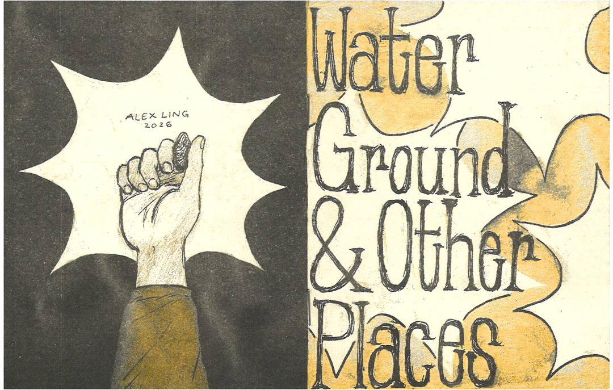
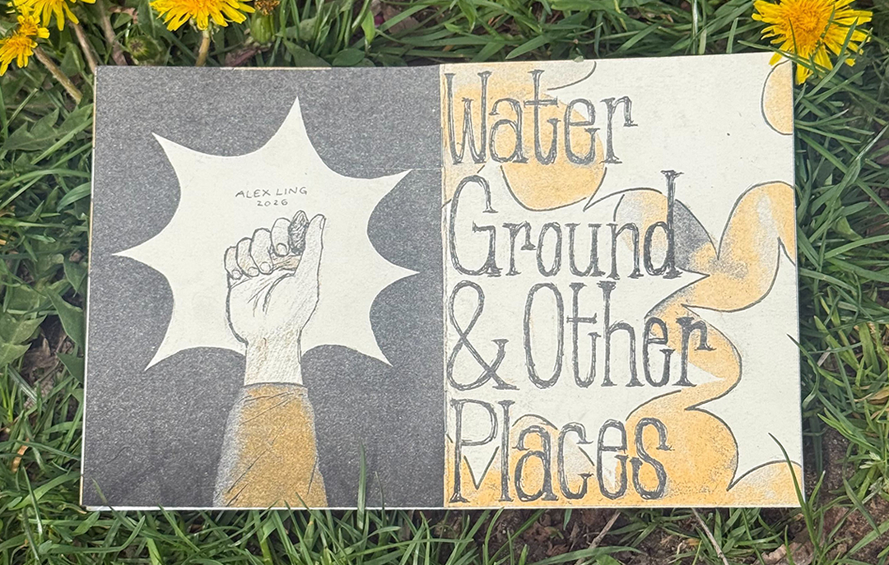
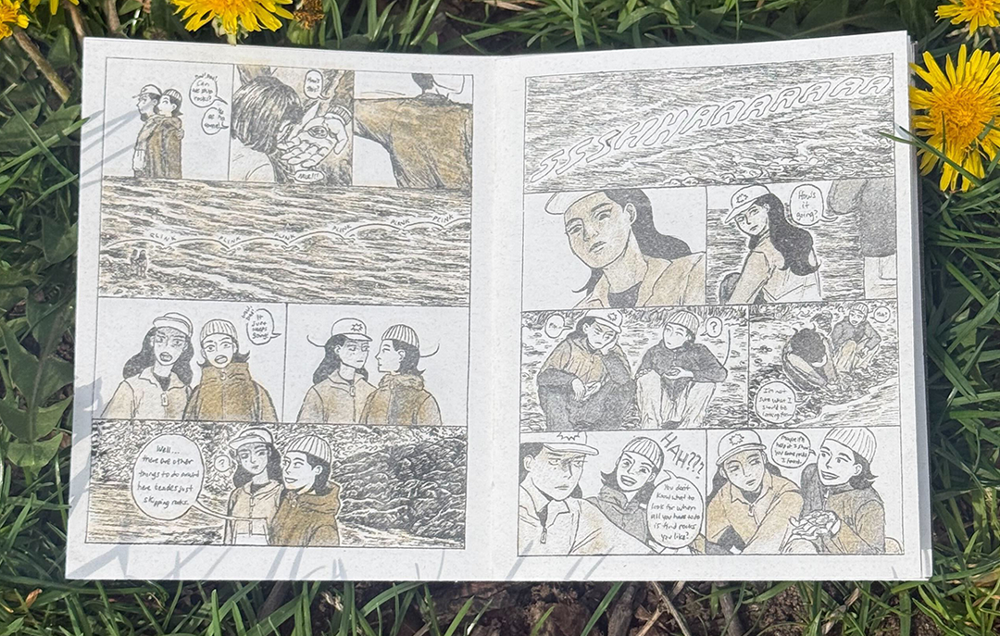

Two-color risograph comic (black and sunflower), self-published at the SVA RisoLAB, 2026
Water, Ground, and Other Places is a 24-page comic about skipping rocks and the fleeting-but-memorable time we spend together. It is a nature-themed slice of life comic that includes surreal (non-horror) sci-fi elements. WGOP was originally drawn with a dip pen in manga ink, sumi-e ink, and graphite on watercolor paper, then scanned and printed in risograph. The comic was inspired by a camping trip in PNW with some of my favorite people.


